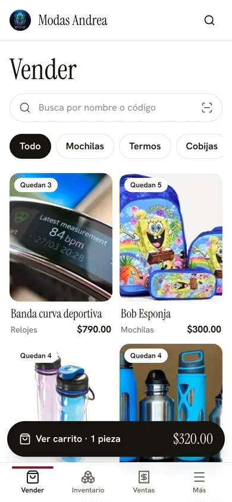
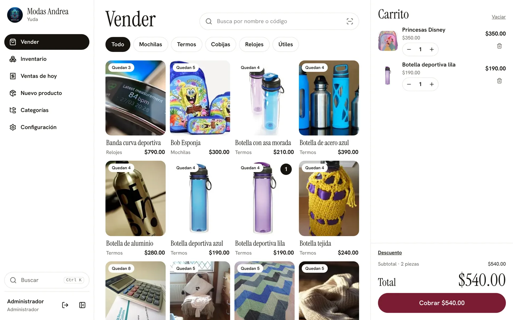
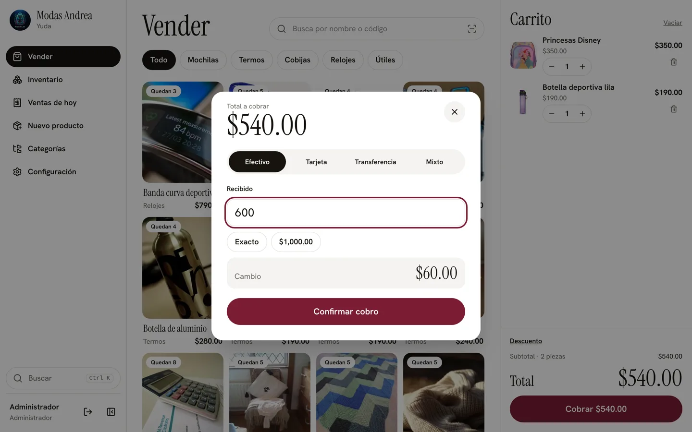
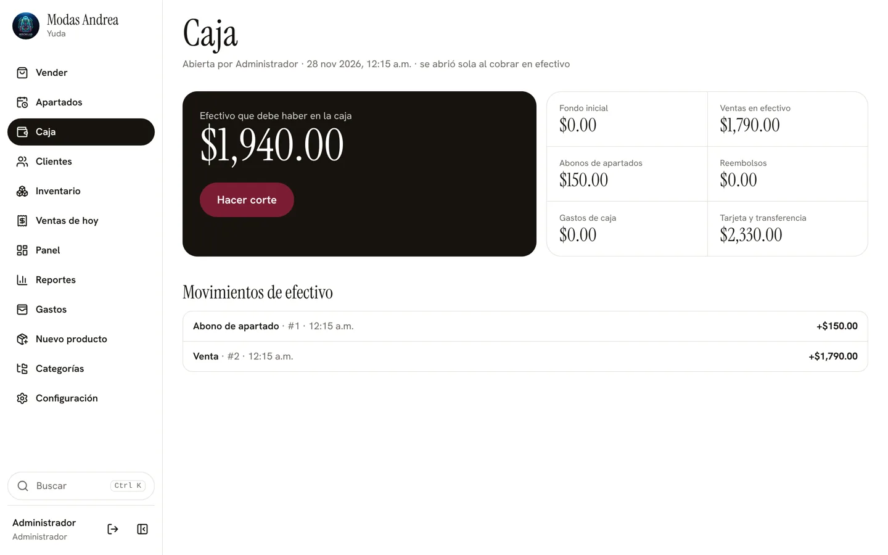
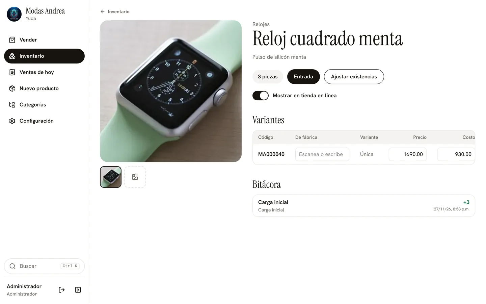
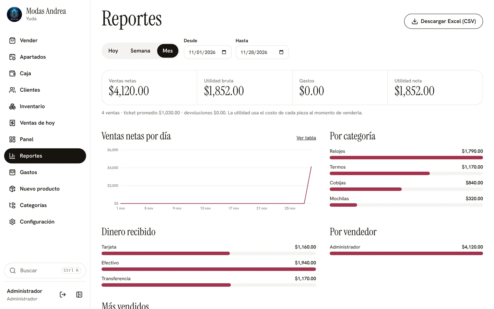

Versión del sistema: etapas 1 a 3 de 6 (servidor, interfaz y operación diaria) · Noviembre de 2026
1. Qué es y cómo funciona
Modas Andrea es el sistema de ventas de la tienda: punto de venta, inventario con fotos, clientes, apartados, caja, gastos y reportes. Sirve para mochilas, útiles, termos, cobijas, relojes y cualquier artículo que se agregue.
Funciona como AcuaGest: una computadora del negocio es el servidor. En ella se guardan la base de datos, las fotos y los respaldos. Las demás computadoras, tablets y celulares abren el sistema en el navegador (Chrome o Edge), conectados a esa computadora.
Importante: mientras la ventana negra de aplicacion.bat esté abierta en la computadora del negocio, el sistema funciona para todos. Si se cierra, los demás dispositivos dejan de conectarse.
Lo que necesitas
Una computadora con Windows 10 u 11 (será el servidor).
Internet solo durante la instalación (para descargar Python y sus librerías).
Para conectar otros dispositivos: que estén en la misma red WiFi que la computadora del negocio.
Opcional: un lector de códigos de barras USB y una impresora de tickets.
2. Instalación en Windows
Descomprime el archivo ZIP en una carpeta fija, por ejemplo C:\ModasAndrea. Clic derecho sobre el ZIP → Extraer todo… No lo abras desde el ZIP sin extraer.
Entra a la carpeta y haz doble clic en instalar.bat. Si Windows muestra "Windows protegió su PC", elige Más información → Ejecutar de todas formas.
El instalador busca Python 3.12 y, si no está, lo instala solo (con winget). Si la ventana dice que no encontró winget, se abrirá la página de Python: instálalo marcando Add python.exe to PATH y vuelve a ejecutar instalar.bat.
Crea un entorno aislado (.venv), instala las librerías y genera el archivo .env con una clave secreta.
Prepara la base de datos en data\modas-andrea.db.
Pregunta si quieres cargar el catálogo de prueba (58 productos con foto). Para probar, responde S; para usarlo ya con tus productos reales, responde N.
Crea el acceso directo Modas Andrea en el escritorio y te ofrece abrirlo.
Puedes volver a ejecutar instalar.bat cuando quieras (por ejemplo, al recibir una versión nueva): no borra tus datos.
Actualizar a una versión nueva
Cierra la ventana de aplicacion.bat.
Copia tu carpeta data y tu archivo .env a un lugar seguro (o simplemente conserva tu carpeta).
Extrae la versión nueva en otra carpeta, copia ahí tu data y tu .env, y ejecuta instalar.bat.
Al abrir, el sistema actualiza la base de datos solo, sin perder información.
3. Abrir el sistema y entrar
Haz doble clic en el acceso directo Modas Andrea (o en aplicacion.bat). Se abre una ventana negra con dos direcciones y, en unos segundos, el navegador con la pantalla de entrada.
En esta computadora:http://127.0.0.1:5000
En la red local: por ejemplo http://192.168.1.20:5000 (la usan los demás dispositivos).
Pantalla de entrada.
Usuarios iniciales
Usuario
Contraseña
Rol
admin
admin123
Administrador
vendedor
12345
Vendedor
Cambia estas contraseñas antes de usar el sistema en la tienda con restablecer_contrasena.bat. Después de 5 intentos equivocados, el usuario se bloquea 5 minutos.
4. Conectar otros dispositivos
Conecta la tablet, celular o laptop a la misma red WiFi que la computadora del negocio.
En el navegador escribe la dirección En la red local que aparece en la ventana negra (por ejemplo http://192.168.1.20:5000).
La primera vez, Windows puede preguntar si permite que Python use la red: elige Permitir (redes privadas).
Entra con tu usuario. Para tenerla como app: en Chrome, menú ⋮ → Agregar a la pantalla principal.
Si la dirección no abre en otro dispositivo, revisa la sección Solución de problemas. Mientras usen la red local, que se vaya el internet no afecta: los dispositivos siguen conectados a la computadora del negocio. La conexión desde fuera de la tienda y las ventas sin señal llegan en la etapa 4.

En el celular el menú queda abajo y el carrito se abre con "Ver carrito".
5. Usuarios y permisos
Puede…
Vendedor
Administrador
Vender, cobrar, buscar con Ctrl+K y escanear
Sí
Sí
Descuentos
Hasta 10 % de la venta
Sin límite
Clientes: registrar, editar y ver
Sí
Sí
Apartados: crear, abonar y liquidar
Sí
Sí
Cancelar apartados
No
Sí
Abrir caja y hacer corte
Sí
Sí, y ve el historial de cortes
Ver inventario y ventas del día
Sí (sin costos)
Sí (con costos)
Cancelar ventas y registrar devoluciones
No
Sí
Productos, precios, entradas y ajustes de inventario
No
Sí
Gastos, reportes, panel, categorías y configuración
No
Sí
6. Vender

Vender: productos a la izquierda, carrito a la derecha.
Hay tres formas de agregar un producto al carrito:
Tocarlo en la cuadrícula. Cada tarjeta muestra la foto, el precio y cuántas piezas quedan. Los chips de arriba filtran por categoría.
Escanearlo con el lector USB, en cualquier momento de la pantalla Vender. Lee el código MA###### del sistema o el código de fábrica.
Buscarlo con Ctrl + K o con el buscador: por nombre o código.
En el carrito ajustas piezas con − y +, quitas renglones y aplicas un Descuento. El sistema no deja pasar de las piezas que hay. Si te mueves a otra pantalla, el carrito se conserva.
El vendedor puede descontar hasta el 10 % de la venta. Si escribe más, aparece "Ese descuento necesita autorización del administrador." y no deja cobrar.
7. Cobrar
Toca Cobrar. Elige la forma de pago:
Efectivo: escribe lo recibido (o toca Exacto, $500 o $1,000) y el sistema muestra el cambio.
Tarjeta: cobra con tu terminal y confirma cuando salga aprobado.
Transferencia: confirma cuando veas el depósito.
Saldo: aparece si el cliente tiene saldo a favor suficiente.
Mixto: combina formas, por ejemplo parte en tarjeta y parte en efectivo. Los montos deben sumar el total.

Cobro en efectivo con cambio.
Al confirmar aparece Venta #folio con el cambio en grande. Toca Nueva venta para empezar otra. Tocar dos veces "Confirmar cobro" no crea dos ventas.
8. Clientes, puntos y saldo a favor
En el carrito toca Cliente para buscarlo por nombre o teléfono, o Registrar cliente nuevo (nombre y teléfono de 10 dígitos, opcional). No se permiten dos clientes con el mismo teléfono.
Puntos: cada compra suma 1 punto por cada $10 pagados. Si devuelve piezas, se restan.
Saldo a favor: se genera al cancelar un apartado con "Dejar como saldo a favor" o con una devolución "a saldo". Se usa al cobrar con la pestaña Saldo o dentro de un pago mixto.
En el menú Clientes ves la lista; en la ficha de cada cliente, sus puntos, su saldo, lo que ha comprado, sus apartados y sus notas.
9. Apartados
En Vender, agrega los productos al carrito.
Elige al cliente (el apartado siempre lleva cliente).
Toca Apartar: escribe el anticipo, la forma de pago y la fecha límite (30 días por defecto).
Las piezas salen del inventario para que nadie más las venda. Aparece Apartado #folio · Saldo $….
Ficha de un apartado con su avance de pago.
En el menú Apartados tienes las pestañas Pendientes, Vencidos, Liquidados y Cancelados. En la ficha:
Registrar abono: no permite abonar más que el saldo.
Liquidar: con el pago final (o si ya está pagado). Se registra como venta y se entregan los productos.
Cancelar apartado (administrador): escribe el motivo y elige si el dinero se devuelve (en efectivo sale de la caja) o queda como saldo a favor. Las piezas regresan al inventario y los abonos quedan registrados.
10. Ventas de hoy, cancelaciones y devoluciones
Ventas del día con totales por forma de pago.
Arriba ves el total del día y cuánto entró en efectivo, tarjeta y transferencia. Con el selector de fecha consultas otros días. Toca una venta para ver su detalle.
Cancelar una venta (administrador)
Para errores de captura: escribe el motivo y confirma. Todas las piezas regresan, se restan los puntos, el saldo a favor usado regresa al cliente y, si fue en efectivo, el dinero sale de la caja abierta. La venta queda registrada como cancelada.
Devolver piezas (administrador)
Cuando el cliente regresa una o varias piezas: escribe cuántas piezas de cada producto regresan, el motivo y cómo se reembolsa (efectivo, tarjeta, transferencia o saldo a favor). El sistema calcula el reembolso con lo que se pagó por esas piezas, incluyendo descuentos. Una venta que ya tiene devoluciones no se puede cancelar: se devuelven las piezas restantes.
11. Caja y corte

Caja abierta: efectivo que debe haber y movimientos.
Al empezar el turno: menú Caja → escribe el Fondo inicial → Abrir caja.
Durante el día la pantalla muestra en vivo el efectivo que debe haber: fondo + ventas en efectivo + abonos en efectivo − reembolsos en efectivo − gastos pagados de la caja − ventas canceladas en efectivo.
Al terminar: Hacer corte → escribe el efectivo contado. Verás Cuadra, Faltan $… o Sobran $… → Guardar corte.
El esperado cuenta lo cobrado, no lo recibido: si cobras $730 y te dan $1,000, suman $730. Si alguien cobra en efectivo sin abrir caja, el sistema la abre solo con fondo $0. El administrador ve el historial de cortes con sus diferencias.
12. Inventario

Ficha de producto: fotos, variantes, precios y bitácora.
El menú Inventario lista todos los productos con su foto, piezas y precio. Puedes filtrar por categoría, por Stock bajo o buscar por nombre o código. En la ficha de cada producto:
Fotos: agrega o quita fotos (siempre debe quedar al menos una).
Variantes: cada color, talla o capacidad tiene su propio código MA######, código de fábrica, precio, costo y piezas. El precio y el costo se editan en la tabla.
Mostrar en tienda en línea: interruptor para la tienda en línea (etapa 6).
Entrada: cuando llega mercancía; suma piezas y puede actualizar el costo.
Ajustar existencias: cuando el conteo físico no coincide; pide el motivo.
Bitácora: cada cambio de piezas (venta, cancelación, entrada, ajuste, apartado, devolución) con fecha y nota.
13. Nuevo producto con fotos
Alta de producto en 4 pasos.
Datos: nombre, categoría y descripción.
Precio: un precio y costo, o marca Tiene variantes (por ejemplo Color: Negro, Rosa…) con precio de cada opción. Si la etiqueta trae código de barras, escanéalo en Código de fábrica.
Fotos: la guía pide Frente, Lado y Detalle. Puedes Usar cámara, Tomar foto con el celular o Elegir foto de la galería. Se necesita al menos una.
Revisar y guardar: recibe su código MA###### y aparece de inmediato en Vender. Las piezas se cargan después con Entrada.
La cámara dentro del navegador funciona en la computadora del negocio. En celulares conectados por la red local, usa Tomar foto con el celular, que abre la cámara del teléfono.
14. Categorías y configuración
Categorías
Crea categorías y subcategorías (por ejemplo Hogar › Termos), renómbralas o desactívalas. Aparecen como filtros en Vender e Inventario y, más adelante, como secciones de la tienda en línea.
Configuración
Nombre y subtítulo del negocio, WhatsApp (para los pedidos en línea), dirección, ancho del ticket (58 u 80 mm), tamaño de etiqueta y a partir de cuántas piezas se avisa "stock bajo".
15. Gastos
Menú Gastos (administrador): escribe el concepto, la categoría (Renta, Luz e internet, Sueldos, Mercancía, Insumos, Otros) y el monto. Marca Se pagó con dinero de la caja cuando el dinero salió del cajón: así el corte lo descuenta. Un gasto de una caja ya cortada no se puede borrar ni cambiar de monto.
16. Reportes y panel

Reportes del mes.
Periodo: Hoy, Semana, Mes o un rango de fechas.
Indicadores: ventas netas (ventas − devoluciones), utilidad bruta (con el costo de cada pieza al momento de venderla), gastos y utilidad neta.
Gráficas: ventas por día (con Ver tabla), por categoría, dinero recibido por forma de pago y ventas por vendedor.
Más vendidos y Descargar Excel (CSV) con cada pieza vendida.
Panel del administrador.
El Panel muestra ventas de hoy y del mes, utilidad, apartados que vencen en 7 días o ya vencidos, stock bajo y Se agota pronto: productos que, al ritmo de venta de los últimos 30 días, se acaban en menos de dos semanas.
17. Respaldos y datos
Todo vive en la carpeta data: la base (modas-andrea.db), las fotos (fotos) y los respaldos (respaldos).
Cada vez que se abre el sistema se crea un respaldo del día; se conservan los 15 más recientes.
Recomendación: una vez por semana copia la carpeta data a una memoria USB o a la nube.
Para restaurar: cierra el sistema, copia el respaldo que quieras como data\modas-andrea.db y vuelve a abrir.
Configuración avanzada (archivo .env)
Variable
Para qué
PORT
Puerto del servidor (5000).
SELLER_MAX_DISCOUNT_PCT
Descuento máximo del vendedor (10).
POINTS_PER_PESOS
Un punto por cada N pesos (10).
LAYAWAY_DAYS
Plazo de un apartado en días (30).
BACKUPS_TO_KEEP
Respaldos que se conservan (15).
Ábrelo con el Bloc de notas y reinicia aplicacion.bat después de cambiarlo.
18. Pasar el sistema anterior
Si tienes la carpeta PROYECTO ANDREA del sistema anterior:
Haz doble clic en migrar_sistema_anterior.bat.
Arrastra a la ventana el archivo bazarges_data.db de esa carpeta y presiona Enter.
Se pasan los productos con sus fotos, precios y existencias, las ventas y los apartados pendientes con todos sus abonos.
El código anterior (por ejemplo MOD001) queda como código de fábrica: se puede seguir escaneando.
No se copian los usuarios ni las contraseñas anteriores.
Se puede ejecutar varias veces: no duplica nada.
19. Datos y pruebas
Catálogo de prueba
cargar_datos_prueba.bat carga 58 productos (mochilas, termos, cobijas, relojes inteligentes y útiles) con foto, precio y existencias, para practicar sin tocar productos reales. No duplica si lo ejecutas otra vez.
Si vas a usar el sistema con tus productos reales, empieza con una base limpia: no cargues el catálogo de prueba, o borra la carpeta data antes de empezar en serio (con el sistema cerrado).
Pruebas automáticas
ejecutar_pruebas.bat revisa que todo funcione en tu computadora: ventas, inventario, apartados, caja, devoluciones, reportes, migración y seguridad. Son más de 150 pruebas y tardan alrededor de un minuto. Usan bases de datos temporales: tus datos no se tocan. Al final dice "Todas las pruebas pasaron" o qué falló.
Si tienes Node.js instalado, ofrece también correr las pruebas de la interfaz (opcional).
Una prueba rápida a mano
Abre caja con $500.
Vende un producto en efectivo recibiendo un billete mayor y revisa el cambio.
Aparta otro producto a un cliente nuevo con anticipo; abona y liquida.
Como administrador, devuelve una pieza de una venta.
Haz el corte: el contado debe coincidir con el esperado.
Revisa Reportes del día y descarga el CSV.
20. Archivos .bat
Archivo
Para qué sirve
instalar.bat
Instala o actualiza todo. No borra datos.
aplicacion.bat
Inicia el sistema. Mientras su ventana esté abierta, todos pueden usarlo.
restablecer_contrasena.bat
Cambia la contraseña de cualquier usuario (también desbloquea).
cargar_datos_prueba.bat
Carga el catálogo de prueba (58 productos).
migrar_sistema_anterior.bat
Pasa productos, fotos, ventas y apartados del sistema anterior.
ejecutar_pruebas.bat
Corre las pruebas automáticas sin tocar tus datos.
21. Solución de problemas
Qué pasa
Qué hacer
"El puerto 5000 ya está en uso"
El sistema ya está abierto en otra ventana. Ciérrala, o cambia PORT en .env.
Otro dispositivo no abre la dirección de red local
Verifica que esté en la misma WiFi; escribe exactamente la dirección de la ventana negra (con http:// y :5000); en Windows permite Python en el Firewall para redes privadas; algunos módems con "aislamiento de clientes" o redes de invitados bloquean esto.
"Usuario o contraseña incorrectos" o "Demasiados intentos"
Espera 5 minutos o usa restablecer_contrasena.bat.
"La sesión de seguridad expiró"
Recarga la página (F5) y vuelve a intentar.
El lector USB no agrega productos
Debe estar configurado para terminar con Enter. Haz clic en un espacio vacío de la pantalla Vender y vuelve a escanear.
"No encontramos ningún producto con ese código"
Ese código no está dado de alta: agrégalo en la ficha del producto como Código de fábrica.
La cámara no abre
Usa Tomar foto con el celular o Elegir foto.
"No hay suficientes piezas"
Otro dispositivo vendió esas piezas. Revisa el producto o registra una Entrada si llegó mercancía.
El corte no cuadra
Revisa los movimientos de la caja: ventas en efectivo, abonos, reembolsos y gastos de caja.
El instalador falla al descargar librerías
Revisa el internet y vuelve a ejecutar instalar.bat.
22. Lo que viene
Etapa
Qué agrega
4 · Conexión y sin señal
Stock en vivo, ventas que se guardan en el dispositivo si se va el internet, app instalable, enlace seguro por internet (Cloudflare) y pantalla "Conectar dispositivo" con QR.
5 · Cámara y etiquetas
Leer códigos con la cámara, imprimir etiquetas y tickets, reconocer productos sin etiqueta con la cámara y botón de IA.
6 · Tienda en línea
Página pública con el estilo Revista conectada al inventario, links con vista previa para WhatsApp y Marketplace, y pedidos por WhatsApp que entran al sistema.